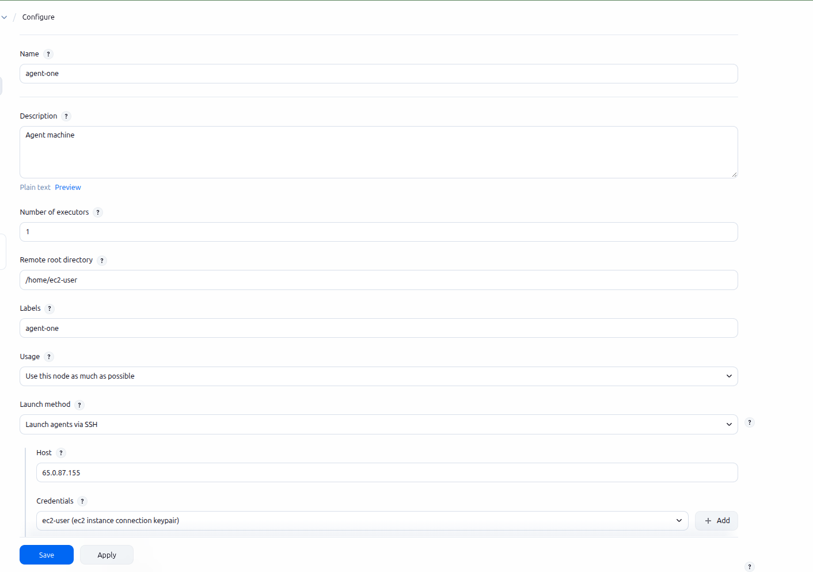

Delivery Pipeline & Readiness Review
A commit goes from pull request to a running ECS service through Jenkins — plan review, approval, canary, rollback — with nobody touching the AWS console.
- On pull request: format, validate, lint, scan, test, and the
terraform planposted as a comment - On merge: build and push the image, apply to dev, smoke test, hold for approval, then staging
- One service released by canary or blue/green with promotion and abort criteria written beforehand
- A rollback job used at least once, plus two parameterised operations jobs
- An operations runbook covering deploy, rollback, log extraction, safe SQL execution and 5xx triage
20Jenkins Provisioned, Pipeline as Code
Mon 28 Sep
Standing up Jenkins itself, then writing pipelines as code from day one.
20.1Controller & Agent Model
Jenkins splits into two roles. The controller (formerly "master") serves the web UI, stores every job's configuration, schedules builds, and holds the plugin/credential state — it orchestrates, it doesn't build. An agent (formerly "slave"/"node") is a separate machine or container that connects to the controller and actually runs the pipeline's steps.
The controller has no isolation from what runs on it — a build that exhausts memory, hangs, or gets compromised takes down the one thing coordinating every other job too. Agents exist specifically to keep build workloads (arbitrary code, effectively) away from the process that everything else depends on staying up.
An agent advertises labels — arbitrary tags like linux, docker, or gpu — and a pipeline's agent directive picks one by label, the same way a Kubernetes pod picks a node by nodeSelector:
pipeline {
agent { label 'linux && docker' }
stages { stage('Build') { steps { sh 'make build' } } }
}
Separate agents mean a Windows build and a Linux build can run on the same Jenkins instance without one machine needing both toolchains installed, and adding build capacity is "add another agent," not "resize the box everything else depends on." The controller stays a stable, mostly-idle coordination point regardless of how much build traffic the team generates.
Why agents exist, beyond just isolation
| Reason | What it actually buys |
|---|---|
| Isolation | Arbitrary, untrusted build code never runs on the one process everything else depends on (the fact-fail above). |
| Horizontal scaling | More build capacity is "provision another agent," not "give the controller a bigger instance" — capacity and coordination scale independently. |
| Environment matching | A label picks the toolchain a build actually needs — a specific OS, a GPU, a licensed tool only installed on one machine — instead of forcing every build to fit whatever the controller happens to have. |
| Parallelism | Multiple agents mean multiple builds genuinely running at once, not queued behind each other on a single executor. |
| Network/resource proximity | An agent can live inside the same VPC, region, or on-prem network as whatever it needs to reach fast — an internal artifact repo, a private database, a specific compliance boundary — without routing the controller itself into that network. |
| Team/security segregation | Folder-scoped agents (20.6) let one team's builds run on infrastructure another team can't touch, without needing a separate Jenkins instance per team. |
Types of agents
| Type | How it connects / how long it lives |
|---|---|
| Static (permanent) agent | Added once by hand via Manage Jenkins → Nodes and left running indefinitely — one real, named machine (20.3's EC2 example). Simple, but it's idle capacity paid for even when no build is using it. |
| SSH (outbound) agent | The controller initiates the connection, over SSH, to a host it already knows the address of (20.3). Needs the agent host reachable from the controller, not the other way around. |
| Inbound (JNLP/WebSocket) agent | The agent initiates the connection to the controller instead — the fix when the agent sits behind NAT or a firewall the controller can't reach inbound, e.g. a build machine on a laptop or in a restricted network. |
| Cloud / ephemeral agent | Provisioned on demand by a plugin (EC2 Fleet, Docker, Kubernetes) when a build needs one, then torn down afterward. No idle cost, and every build starts from a known-clean environment instead of accumulating drift on a long-lived machine. |
| Docker agent | Declared directly in a Jenkinsfile — agent { docker { image 'node:20' } } — a fresh, disposable container per build or per stage, with the exact toolchain version pinned in code instead of installed once on a static machine. |
| Built-in node | The controller's own, hidden executor pool — technically able to run builds itself, which is exactly what the fact-fail above says not to rely on. Usually set to 0 executors deliberately on any real controller. |
20.2Installing Jenkins & First-Time Setup
Before anything gets provisioned as code (20.4), it's worth knowing what "installing Jenkins" actually involves by hand — the same principle as week4.html starting from ssh-keygen and a plain resource block before ever reaching a module. Jenkins is a Java application; everything below assumes Java is present first.
| Method | Command | Good for |
|---|---|---|
| Native package (Amazon Linux/RHEL) | dnf install jenkins, after adding the Jenkins repo | A long-lived controller on a real instance — this project's approach (20.4) |
| Native package (Debian/Ubuntu) | apt-get install jenkins, after adding the Jenkins apt repo and signing key | Same idea, different AMI family — the exact dnf/apt-get distinction from 18.8.1, applied to Jenkins itself now |
| Docker | docker run -p 8080:8080 -v jenkins_home:/var/jenkins_home jenkins/jenkins:lts | Trying Jenkins locally, or running it as a container on ECS/EKS instead of a bare EC2 instance |
| WAR file | java -jar jenkins.war | Quick, throwaway testing — nothing installed system-wide, nothing left behind but the process |
#!/bin/bash # Amazon Linux / RHEL family dnf install -y java-17-amazon-corretto wget -O /etc/yum.repos.d/jenkins.repo https://pkg.jenkins.io/redhat-stable/jenkins.repo rpm --import https://pkg.jenkins.io/redhat-stable/jenkins.io-2023.key dnf install -y jenkins systemctl enable --now jenkins
#!/bin/bash # Debian / Ubuntu family apt-get update apt-get install -y fontconfig openjdk-17-jre wget -O /usr/share/keyrings/jenkins-keyring.asc https://pkg.jenkins.io/debian-stable/jenkins.io-2023.key echo "deb [signed-by=/usr/share/keyrings/jenkins-keyring.asc] https://pkg.jenkins.io/debian-stable binary/" \ | tee /etc/apt/sources.list.d/jenkins.list apt-get update apt-get install -y jenkins
Recent Jenkins releases require Java 17 or 21 — an older Java 11 install fails to even start the service, with the actual reason buried in systemctl status jenkins or /var/log/jenkins/jenkins.log rather than shown anywhere obvious. Check the specific Jenkins version's requirements before assuming whatever Java happens to already be on an AMI is new enough.
First-time setup wizard
Jenkins starts on port 8080 by default and, on first boot, is locked behind a one-time password only readable from the server itself:
cat /var/lib/jenkins/secrets/initialAdminPassword
- Unlock Jenkins
- Paste that password into the setup wizard at
http://<controller-ip>:8080— proves whoever's completing setup actually has access to the server itself, not just the network port. - Install plugins
- "Install suggested plugins" is the reasonable default for a first controller — a curated set covering Git, pipelines, and the essentials. "Select plugins to install" is the deliberate route once 20.5's plugin-hygiene principle actually matters — smaller footprint, chosen instead of inherited.
- Create the first admin user
- Skipping this and continuing as the default
adminaccount is explicitly offered but shouldn't be taken for anything beyond a five-minute local test — the same reasoning as never leaving a database on its default credentials. - Instance configuration
- Confirms the URL Jenkins believes it's reachable at — matters later for webhook payload URLs (20.8) and any notification that links back to a build, since a wrong URL here means links that go nowhere.
Operating Jenkins as a systemd service
The native package installs Jenkins as a real systemd unit, not just a process someone starts by hand — the same start/stop/status vocabulary as any other Linux service applies directly:
systemctl start jenkins # start it now systemctl stop jenkins # stop it now systemctl restart jenkins # e.g. after a config or plugin change that needs a restart systemctl status jenkins # is it actually running, and since when systemctl enable jenkins # survive a reboot -- already done by --now during install journalctl -u jenkins -f # follow the service's own logs live
Two files control how the service actually behaves, separate from anything configured in the Jenkins UI itself:
/etc/sysconfig/jenkins(RHEL family) //etc/default/jenkins(Debian family)- Environment variables read by the systemd unit before Jenkins even starts —
JENKINS_PORT(default 8080),JENKINS_HOME(where job data actually lives),JENKINS_USER(which OS user the process runs as). Changing the port here, not in the Jenkins UI, is what actually takes effect — the UI has no setting for its own listen port. JAVA_OPTS/JENKINS_JAVA_OPTIONS- JVM flags passed to the underlying Java process — heap size (
-Xmx2g), most commonly, since Jenkins is a long-running JVM and the default heap can be too small for a controller running many jobs.
Neither of the files above is watched live — editing JENKINS_PORT or JAVA_OPTS and expecting it to take effect immediately is the same mistake as expecting a changed environment variable to reach an already-running process anywhere else. systemctl restart jenkins is what actually applies it.
systemctl status jenkins showing active (running), plus the setup wizard actually loading in a browser on port 8080, is the full confirmation — no separate health check exists beyond "does the service report running and does the UI respond."
Wrapping this exact install script into an aws_instance's user_data, with JENKINS_HOME on its own EBS volume for durability, is covered in week4.html 18.10 — that's fundamentally a Terraform/infrastructure topic (provisioning compute), not a Jenkins-specific one, so it lives with the rest of Week 4's real resource patterns rather than here.
20.3Connecting an Agent Node via SSH
A controller with no agents attached still has nowhere to actually run a build (20.1). Manage Jenkins → Nodes → New Node creates one — "Permanent Agent" for a real, long-lived machine like an EC2 instance, as opposed to a cloud-provisioned, one-build-and-gone agent. The SSH launch method needs nothing pre-installed on the target beyond SSH access and a working Java — the controller pushes its own agent jar over the connection itself.

- Name
- The node's identity inside Jenkins — shown in build history and node listings, independent of the label used to target it.
- Remote root directory
- Where the agent jar and every job's workspace get written on the remote machine —
/home/ec2-userabove, which is also why the earlier pipeline output showedRunning on agent-one in /home/ec2-user/workspace/CICD. - Labels
- What a pipeline's
agentdirective (20.1) actually matches against — set toagent-onehere, matching the node's own name, but the two are independent; a label can be shared across several nodes, or differ from the node's name entirely. - Usage
- "Use this node as much as possible" lets the controller schedule any matching job here; the alternative, "Only build jobs with label expressions matching this node," reserves it for jobs that explicitly ask for it and nothing else.
- Launch method: Launch agents via SSH
- Host and Credentials (an SSH keypair, added to Jenkins' credentials store — 20.6) are all this method needs. Jenkins opens the connection itself on save, or whenever the node is manually relaunched.
What actually happens when it connects
[SSH] Opening SSH connection to <agent-host>:22. [SSH] Authentication successful. [SSH] Starting sftp client. [SSH] Copying latest remoting.jar... [SSH] Starting agent process: cd "/home/ec2-user" && java -jar remoting.jar -workDir /home/ec2-user Agent successfully connected and online
Underneath the UI, this is exactly the SSH-file-transfer-plus-remote-command pattern from week4.html's own ssh-keygen/scp fundamentals — Jenkins just automates it: connect, copy its agent jar over SFTP, then run it with java -jar on the other end.
The SSH connection and the SFTP copy can both succeed — the log shows authentication working and remoting.jar transferring cleanly — and the launch can still fail at the very last step, bash: line 1: java: command not found / Agent JVM has terminated. Exit code=127, because there's simply no java on the agent host's PATH. A common real cause: a boot-time install script (this project's own 20.2/week4.html 18.10 pattern) that ran dnf install/yum install without -y — harmless interactively, but silently skipped during a non-interactive user_data boot with no terminal to answer its confirmation prompt. Fix on the agent host directly (install Java, or relaunch the instance with the corrected script) — nothing about this is a Jenkins-side problem.
Referencing the node from a pipeline
pipeline {
agent { label 'agent-one' }
stages {
stage('Hello') { steps { echo 'Hello World' } }
}
}
agent { label agent-one } — no quotes — doesn't fail because of anything wrong with the label. Groovy parses the bareword agent-one as the expression agent - one, subtracting two undefined variables, which throws groovy.lang.MissingPropertyException: No such property: agent from inside Jenkins' own ModelInterpreter.inDeclarativeAgent — a genuinely confusing error for what's really just a missing pair of quotes. label 'agent-one' is the fix, same as quoting any other Groovy string.
A pipeline whose agent label matches only a currently-disconnected node queues indefinitely — there's no default timeout. Manage Jenkins → Nodes → that node shows its live status and log; clicking Launch agent retries the SSH connection without touching the pipeline itself, and an already-queued build picks up automatically the moment the node comes back online. On a memory-constrained instance (a t3.micro's 1GB strained by a JVM plus the remoting process), a node can connect successfully and then drop again shortly after — dmesg | grep -i kill on the agent host is worth checking for an OOM kill if that keeps happening.
20.4Job Types: What "New Item" Actually Offers
Clicking New Item in Jenkins shows every kind of thing it can create, in one screen — worth knowing the full list before defaulting to whichever one a tutorial happened to use. An overview for now; each gets its own use-cases/pros-cons/step-by-step treatment later.
| Item type | What it's for |
|---|---|
| Pipeline | Build, test, and deploy using a Jenkinsfile (20.7). Supports stages, parallel work, and running steps across multiple agents. |
| Freestyle project | The classic, UI-configured job type — checks out from up to one SCM, runs build steps serially, then post-build actions like archiving artifacts or sending email. Predates Pipeline-as-code, and still its own CJE exam section (20.8). |
| Multi-configuration project | One job definition run across many combinations automatically — multiple OSes, multiple environments, multiple platform targets — without hand-creating a separate job per combination. |
| Folder | A real namespace, not just a filter — two items can share a name if they live in different folders. The same folder that scopes credentials and permissions in 20.5. |
| Multibranch Pipeline | Scans one repository and creates a Pipeline job per detected branch and pull request automatically (20.7) — no manually creating a job per branch. |
| Organization Folder | One level up from Multibranch Pipeline — scans an entire GitHub org/Bitbucket project for repositories, and creates a Multibranch Pipeline for each one it finds. |
It's the seventh option on the same screen, but it's a shortcut action, not a job type of its own — it just copies an existing item's configuration into a new one, for any type above, as a starting point instead of configuring from scratch.
20.5Pipeline Job Configuration: General, Triggers & the Script Definition
Choosing "Pipeline" as the item type (20.4) opens this configuration screen — the same shape every Pipeline job shares, regardless of what its stages actually do.
General
| Option | What it actually does |
|---|---|
| Discard old builds | A retention policy — keep only the last N builds or the last N days. Without it, build history (20.6) grows forever. |
| Do not allow concurrent builds | Serializes runs of this same job — a second trigger waits instead of running in parallel. For a job that touches shared state it can't safely share with itself. |
| Do not allow the pipeline to resume if the controller restarts | Jenkins normally tries to resume an in-progress pipeline after a controller restart. Disabling this makes a restart abort the run instead — the right choice when a resumed run risks replaying a non-idempotent step (5.6/week2.html territory: retries are only safe when the operation tolerates repetition). |
| GitHub project | Just a display link back to the repo's GitHub page — cosmetic, not functional. |
| Pipeline speed/durability override | Trades how often Jenkins persists pipeline state to disk against I/O overhead — safer and slower, or faster and more state lost if the controller crashes mid-run. |
| Preserve stashes from completed builds | A stash (files passed between stages/agents) is normally discarded once the build finishes — this keeps it around afterward for inspection. |
| This project is parameterized | The UI equivalent of a Jenkinsfile's parameters {} block (20.8) — configured by clicking instead of by code. |
| Throttle builds | Rate-limits how often, or how many concurrently, this job (or a named category of jobs) can run — for protecting a shared resource several different jobs compete for. |
"Do not allow concurrent builds" only stops this one job from overlapping with itself. "Throttle builds" limits a whole category of jobs against each other — useful when five unrelated jobs all hit the same rate-limited API and none of them individually looks like the problem.
Triggers
| Trigger | What starts the build |
|---|---|
| Build after other projects are built | Upstream/downstream chaining — this job runs automatically once a named other job finishes. |
| Build periodically | A cron-syntax schedule — the same five-field format as week2.html 5.6's scheduled scaling policies, evaluated in the controller's own timezone. |
| GitHub hook trigger for GITScm polling | The real webhook (20.9) — GitHub pushes an event to Jenkins the moment something happens, no delay. |
| Poll SCM | The older mechanism 20.9 contrasts against webhooks directly — also cron-syntax, but Jenkins checks the repo on a timer instead of being told immediately. |
| Trigger builds remotely | An authenticated URL with a token, callable by an external script or system to start a build without needing full Jenkins API credentials. |
The script definition itself
Further down the same screen, "Pipeline script" is one of two ways to tell Jenkins what to actually run:
pipeline {
agent any
stages {
stage('Hello') {
steps {
echo 'Hello World'
}
}
stage('Create Folder') {
steps {
sh "mkdir -p devops"
}
}
stage('Bye') {
steps {
echo 'Bye'
}
}
}
}
"Pipeline script" types the Groovy directly into this one field, saved only in Jenkins' own job configuration — invisible to git history, code review, or branch-per-Jenkinsfile discovery (20.9's Multibranch Pipeline). "Pipeline script from SCM" is the other option on the same dropdown — pointing at a Jenkinsfile checked into the repository, which is what every example in 20.7 onward assumes. Fine for a five-minute "does Jenkins work at all" test; the wrong choice for anything meant to last.
- Use Groovy Sandbox
- Checked by default — restricts which Java/Groovy APIs a script can call, since arbitrary unrestricted Groovy can do real damage running on the controller. Unchecking it requires an administrator to manually approve the script before it can run.
- Pipeline Syntax (link)
- A built-in generator that produces correct step syntax by filling out a form, instead of memorizing every step's exact arguments from documentation.
20.6Plugin Hygiene, the Credentials Store & Folder-Level Security
Three separate concerns that all show up under "Manage Jenkins," easy to conflate.
Plugin hygiene
Every installed plugin is both an attack surface and a maintenance burden — each one can introduce its own vulnerabilities, and each one needs updating independently. Install only what a pipeline actually needs, keep an inventory of what's installed and why, and pin versions rather than auto-updating blindly (the same reasoning as 15.2's provider version pinning, applied to Jenkins' own plugin ecosystem).
The credentials store
Jenkins has a built-in, encrypted credential store (Manage Jenkins → Credentials) — AWS keys, SSH keys, tokens are added there once and referenced by ID from a Jenkinsfile, never hardcoded into pipeline code:
withCredentials([usernamePassword(credentialsId: 'ecr-creds', usernameVariable: 'USER', passwordVariable: 'PASS')]) {
sh 'docker login -u $USER -p $PASS ...'
}
credentialsId: 'ecr-creds' is just a lookup key — the actual secret value never appears in the pipeline source, never gets committed to the repo, and Jenkins actively masks it out of build console logs. Anyone who can edit the Jenkinsfile can use the credential, but they can't read its value from the code itself.
Folder-level security
Folders aren't just organization — they're a permission and credential-scoping boundary. A credential added inside a folder is only visible to jobs inside that same folder, and role-based/matrix security can grant a team full control over their own folder's jobs without touching anyone else's. This is what makes multi-team Jenkins viable on one shared controller instead of needing a separate instance per team.
20.7Backing Up JENKINS_HOME
JENKINS_HOME holds everything: every job's configuration, full build history, encrypted credentials, and every installed plugin's binary. Losing it is losing the entire Jenkins instance's identity, not just the compute it happened to run on.
| EBS snapshot | ThinBackup (plugin) | |
|---|---|---|
| What it captures | The entire volume, byte for byte | Job configs, build records, and credentials specifically — Jenkins-aware |
| Restore unit | The whole volume, as one point in time | Selectable — restore just job configs without touching build history, or vice versa |
| Where it lives | Infra-level (week4.html 18.10's EBS volume) — same mechanism as any other point-in-time recovery (week2.html 7.2's RDS backups) | Jenkins-level, scheduled from inside the Jenkins UI itself |
The same principle from every other backup strategy in this project applies here without modification: a snapshot that's never been restored is unverified. Actually restoring a JENKINS_HOME snapshot onto a fresh controller at least once, before it's needed for real, is what turns "we take backups" into "we know recovery actually works."
20.8The Declarative Jenkinsfile
A Jenkinsfile is Jenkins' equivalent of a Terraform config — a checked-in file describing a pipeline as code, instead of clicking through the UI to define a job.
pipeline {
agent { label 'linux' }
parameters {
choice(name: 'ENVIRONMENT', choices: ['dev', 'stg'], description: 'Target environment')
}
environment {
AWS_REGION = 'ap-south-1'
}
stages {
stage('Test') {
steps { sh 'npm test' }
}
stage('Deploy') {
when { branch 'main' }
steps { sh "./deploy.sh ${params.ENVIRONMENT}" }
}
}
post {
failure { echo 'Notify the team -- build failed' }
always { cleanWs() }
}
}
agent- Where this pipeline runs — a label (20.1), a specific Docker image, or
noneif each stage declares its own. parameters- Build-time user input — a dropdown, a string field, a checkbox — collected before the pipeline starts, referenced as
params.NAME. environment- Environment variables available to every step in the pipeline (or scoped to just one
stageif declared inside it instead). when- Guards a
stage— here, theDeploystage only actually runs on themainbranch, though it's still evaluated (and skipped) on every other branch's run. post- Runs after the pipeline finishes, regardless of outcome —
always,success,failure, and others let cleanup or notification logic depend on how the run ended, the closest Jenkins equivalent to atry/finally.
20.9Multibranch Pipelines, Webhooks & Shared Libraries
Three pieces that turn "one Jenkinsfile" into "a real CI setup serving a whole repository."
Multibranch pipeline
Instead of one job per branch created by hand, a multibranch pipeline job scans a repository and automatically creates (and destroys) a pipeline run per branch and per pull request — each one running the same Jenkinsfile, checked into that specific branch, so a feature branch can even modify its own pipeline before merging.
Webhooks
Without a webhook, Jenkins has to poll the repository on a timer to notice new commits — slow, and wasteful when nothing's changed. A webhook has GitHub/GitLab push an event to Jenkins the moment a commit or PR happens, triggering the build immediately instead of waiting for the next poll.
Shared libraries
A shared library is a separate git repository of reusable Groovy pipeline code (conventionally under vars/ and src/), loaded into any Jenkinsfile that needs it:
@Library('platform-shared-lib') _
pipeline {
agent { label 'linux' }
stages {
stage('Deploy') {
steps { deployToEcs(service: 'order-service', environment: 'dev') }
}
}
}
deployToEcs(...) above is a function defined once in the shared library and called from every pipeline that needs to deploy to ECS — the exact same motivation as extracting a Terraform module (16.6): once the same handful of steps shows up in a third Jenkinsfile, that's the signal to stop copy-pasting Groovy and put it in one place every pipeline calls instead.
20.10Certified Jenkins Engineer (CJE)
The external validation for Jenkins specifically, the way week4.html 19.9 covers Terraform's — CloudBees' Certified Jenkins Engineer (CJE) exam, last updated September 2023. Worth knowing before searching further: CloudBees retired a similarly-named CCJE (Certified CloudBees Jenkins Engineer) credential back in 2022 — CJE, without the extra "C," is the one still active.
| Format | 60 multiple-choice questions, 90 minutes |
| Passing score | 66% |
| Prerequisites | None formally, though CloudBees recommends real hands-on Jenkins experience first |
| Tests against | Open-source Jenkins core (not CloudBees CI/Operations Center specifically) |
The four exam domains
- Jenkins Fundamentals — core CI/CD concepts, jobs and builds, source code management integration, plugins, security (authentication/authorization), the REST API
- Jenkins Administration — installation, distributed builds, controller/agent configuration, credentials, artifact and fingerprint management, notifications
- Pipeline (Build Technologies) — declarative pipeline syntax, stages and steps, multibranch pipelines, shared libraries, promotion strategies, upstream/downstream triggering
- Freestyle (Build Technologies) — the older, UI-configured job type predating Pipeline-as-code — still a real exam section even though this project skips straight to declarative pipelines
Unlike week4.html 19.9's HashiCorp source (a single official, current objectives page), CloudBees doesn't publish one canonical up-to-date percentage breakdown the way HashiCorp does — third-party prep sites list different weightings and even different section names for the same four domains. Treat the domain list above as directionally reliable, but verify specifics against CloudBees' own current study guide before relying on any one source's exact percentages.
Controller/agent architecture (20.1), installation itself (20.2 — literally named in the Administration domain's topic list), connecting a distributed agent (20.3 — "distributed builds, controller/agent configuration" in the Administration domain, almost word for word), job types and Pipeline job configuration (20.4, 20.5), plugin/credential/folder security (20.6), the declarative Jenkinsfile (20.8), and multibranch/shared libraries (20.9) map directly onto the Administration and Pipeline domains — the two domains carrying the most exam weight in every breakdown found. Freestyle jobs get a mention in 20.4 but no deep-dive yet — worth a dedicated look before sitting this exam, since it's still a full CJE section.
21CI and CD, End to End
Tue 29 Sep
The full path from commit to running service, plus the two operations jobs the customer names explicitly.
- Lint and test stages
- Container build and push to ECR tagged by commit
terraform fmt,validateandplanposted onto the pull request- The approval gate,
terraform apply - ECS service update with wait-for-stable, smoke tests
- A one-click rollback job, notifications
- Safe SQL execution inside a transaction, and log extraction for a time window
22Progressive Delivery, Runbook, Readiness Review
Wed 30 Sep
Morning: finishing the pipeline. Afternoon: the readiness review itself.
- Blue/green and canary driven from the pipeline
- Migration step ordering around a deploy
- OIDC and IAM roles instead of static credentials
- Timeouts, retries and idempotency
- The operations runbook, written from what's been built
- Readiness review: live demo, architecture defence, customer-style questioning
Three days is enough to build and operate this pipeline, not to design a delivery platform from nothing. Jenkins is targeted at L2 on 30 September and finishes during October's knowledge transfer, on the customer's own Jenkins, with the tech lead pairing.
A single commit travels from push to running container with nobody touching the console, and each engineer can rebuild and redeploy the environment alone while answering questions about any resource in it.